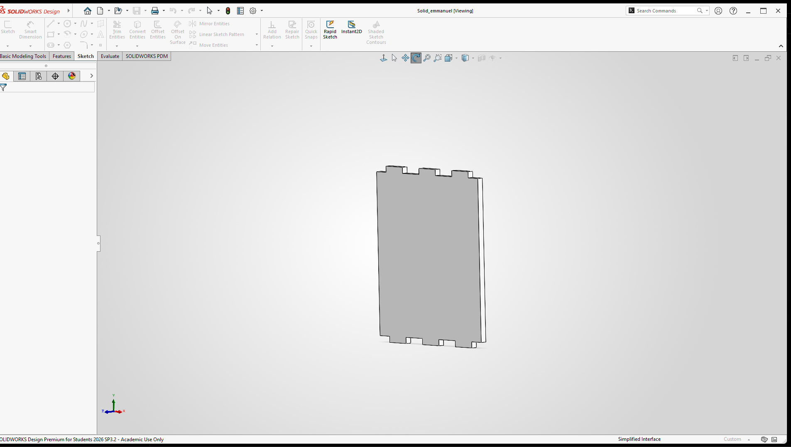
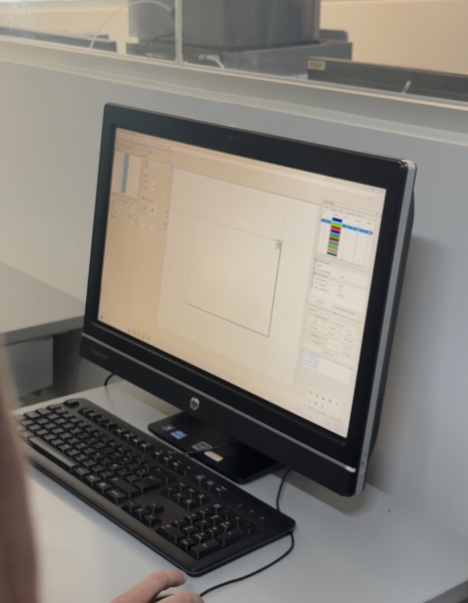
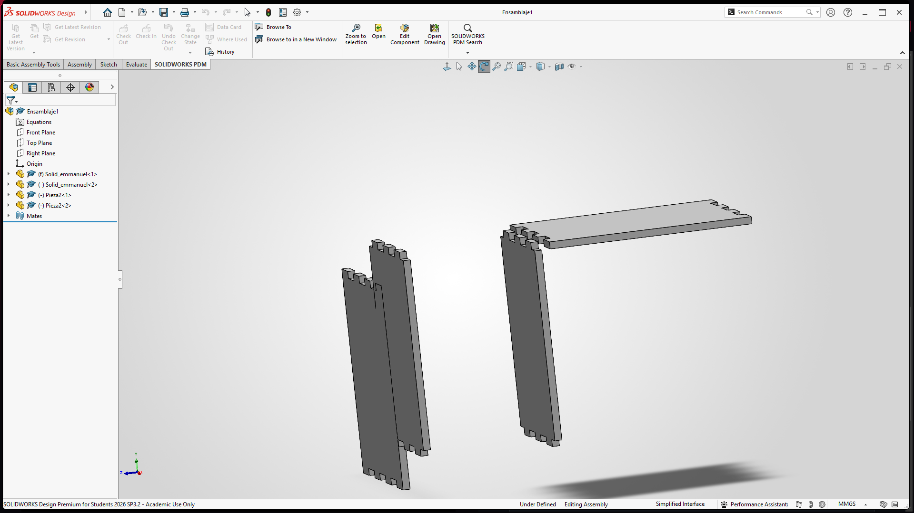
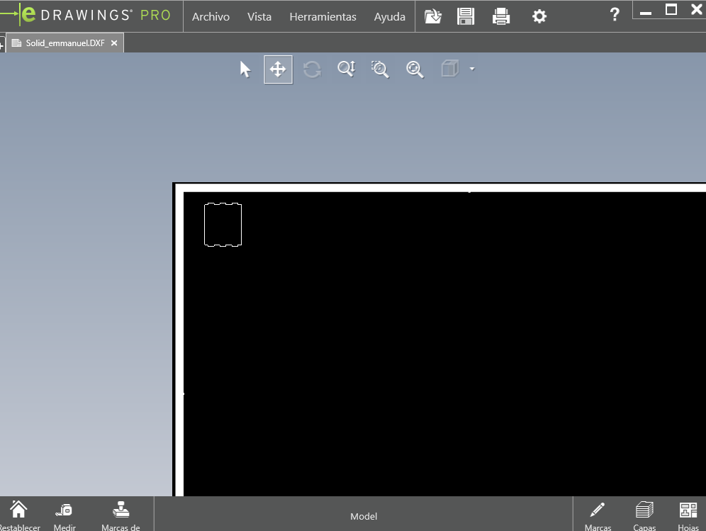

1. Introducción y Contexto
El tránsito del concepto abstracto a la materialización digital requiere herramientas de diseño asistido por computadora (CAD) de alta precisión. Durante esta tercera semana de actividades, el enfoque principal consistió en estructurar piezas paramétricas complejas, aplicar relaciones geométricas avanzadas y configurar los parámetros iniciales en el sistema FDX.
Dominar la creación de croquis avanzados, matrices y restricciones es fundamental para optimizar las geometrías antes de cualquier proceso posterior.
2. Software y Herramientas Digitales Utilizadas
Durante la sesión se emplearon herramientas digitales de diseño y preparación de archivos:
2.1 SolidWorks y Diseño Paramétrico
¿Cómo funciona? SolidWorks es un software de diseño CAD 3D basado en características paramétricas. Su funcionamiento se fundamenta en la creación de croquis bidimensionales acotados mediante relaciones geométricas (paralelismo, perpendicularidad, simetría) que posteriormente se transforman en volúmenes tridimensionales mediante operaciones de extrusión, revolución o cortes. Permite el uso de herramientas avanzadas como líneas constructivas y funciones de espejo para estructurar piezas complejas de manera eficiente.

2.2 Sistema FDX y Configuración
¿Cómo funciona? El sistema FDX procesa los modelos tridimensionales para gestionar su configuración y preparación técnica. Permite ajustar los parámetros operativos esenciales, definir trayectorias o configuraciones y verificar la correcta estructura de los archivos antes de proceder con las siguientes etapas del proyecto.

3. Modelos CAD y Preparación Digital
Como resultado del proceso de diseño paramétrico y estructuración digital, se obtuvieron las siguientes evidencias:
3.1 Pieza paramétrica modelada en SolidWorks
Muestra el modelo tridimensional de la pieza con restricciones geométricas y simetrías aplicadas, optimizada en el entorno virtual de diseño.

3.2 Visualización del archivo en FDX
Vista preliminar del archivo exportado (Solid_emmanuel.DXF) cargado en la interfaz, mostrando la geometría dispuesta para su revisión y análisis digital previo.

4. Conclusiones
La práctica demuestra que un diseño paramétrico robusto y bien acotado en herramientas como SolidWorks facilita enormemente la gestión y futura producción de componentes mecatrónicos. El dominio de la interfaz y la correcta preparación de los archivos mediante FDX son pasos previos indispensables para asegurar la precisión geométrica en el proyecto.
5. Fuentes de Información
Los fundamentos sobre diseño CAD y parametrización se basan en la siguiente literatura especializada:
- Planchard, D. C. (2020). Engineering Graphics with SOLIDWORKS. SDC Publications.
- Zeid, I. (2005). Mastering CAD/CAM. McGraw-Hill.